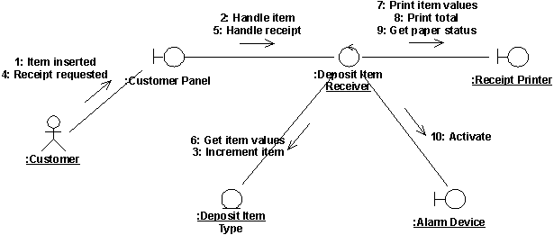
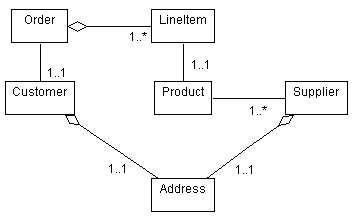

|
Create Analysis Use-Case Realization
|
Purpose
|
To create the modeling element used to express the behavior of the use case.
|
Use Cases form the central focus of most of the early analysis and design work. To enable the transition between
Requirements-centric tasks and Analysis/Design-centric tasks, the Work Product: Use-Case Realization serves as a bridge, providing a
way to trace behavior in the Analysis and Design Models back to the Use-Case Model, as well as organizing
collaborations around the Use Case concept.
If one does not already exist, create a Analysis Use-Case Realization in the Analysis Model for the Use Case. The name for the Analysis Use-Case Realization should
be the same as the associated Use Case, and a "realizes" relationship should be established from the analysis use-case
realization to its associated use case.
For more information on use-case realizations, see Guideline: Use-Case Realization.
|
Supplement the Use-Case Description
|
Purpose
|
To capture additional information needed in order to understand the required internal behavior of the
system that might be missing from the use-case description written for the customer of the system.
|
The description of each use case is not always sufficient for finding analysis classes and their objects. The customer
generally finds information about what happens inside the system uninteresting, so the use-case descriptions may leave
such information out. In these cases, the use-case description reads like a 'black-box' description, in which internal
details on what the system does in response to an actor's actions is either missing or very summarily described. To
find the objects which perform the use case, you need to have the 'white box' description of what the system does from
an internal perspective.
Example
In the case of an Automated Teller Machine (ATM), the customer of the system might prefer to say
"The ATM validates the Bank Customer's card."
To describe the user authentication behavior of the system. While this might be sufficient for the customer, it gives
us no real idea of what actually happens inside the ATM to validate the card.
In order to form an internal picture of how the system works, at a sufficient level of detail to identify objects, we
might need additional information. Taking the ATM card validation activity as an example, the expanded description
would read as:
"The ATM sends the customer's account number and the PIN to the ATM Network to be validated. The ATM Network
returns success if the customer number and the PIN match and the customer is authorized to perform transactions,
otherwise the ATM Network returns failure."
This level of detail provides a clear idea of what information is required (account number and PIN) and who is
responsible for the authentication (the ATM Network, an actor in the Use Case model). From this information, we can
identify two potential objects (a Customer object, with attributes of account number and PIN, and an ATM Network
Interface) as well as their responsibilities.
Examine the use-case description to see if the internal behavior of the system is clearly defined. The internal
behavior of the system should be unambiguous, so that it is clear what the system must do. It is not necessary to
define the elements within the system (objects) that are responsible for performing that behavior - just a clear
definition of what needs to be done.
Sources of information for this detail include domain experts who can help define what the system needs to do. A good
question to ask, when considering a particular behavior of the system, is "what does it mean for the system to do that
thing?". If what the system does to perform the behavior is not well defined enough to answer that question, there is
likely more information that needs to be uncovered.
The following alternatives exist for supplementing the description of the Flow of Events:
-
Do not describe it at all. This might be the case if you think the interaction diagrams are
self-explanatory, or if the Flow of Events of the corresponding use case provides a sufficient description.
-
Supplement the existing Flow of Event description. Add supplementary descriptions to the Flow of
Events in areas where the existing text is unclear about the actions the system should take.
-
Describe it as a complete textual flow, separate from the "external" Use Case Flow of Events description.
This is appropriate in cases where the internal behavior of the system bears little resemblance to the external
behavior of the system. In this case, a completely separate description, associated with the analysis use-case
realization rather than the use case, is warranted.
|
Find Analysis Classes from Use-Case Behavior
|
Purpose
|
To identify a candidate set of model elements (analysis classes) which will be capable of performing the
behavior described in use cases.
|
Finding a candidate set of analysis classes is the first step in the transformation of the system from a mere statement
of required behavior to a description of how the system will work. In this effort, analysis classes are used to
represent the roles of model elements which provide the necessary behavior to fulfill the functional requirements
specified by use cases and the non-functional requirements specified by the supplemental requirements. As the project
focus shifts to design, these roles evolve a set of design elements which realize the use cases.
The roles identified in Use-Case Analysis primarily express behavior of the upper-most layers of the
system-application-specific behavior and domain specific behavior. Boundary classes and control classes typically
evolve into application-layer design elements, while entity classes evolve into domain-specific design elements. Lower
layer design element typically evolve from the analysis mechanisms which are used by the analysis classes identified
here.
The technique described here uses three different perspectives of the system to drive the identification of candidate
classes. The three perspectives are that of the boundary between the system and its actors, the information the
system uses, and the control logic of the system. The corresponding class stereotypes, boundary, entity and control,
are conveniences used during Analysis that disappear in Design.
Identification of classes means just that: they should be identified, named, and described briefly in a few sentences.
For more information on identification of analysis classes, see Guideline: Analysis Class. For more information on analysis use-case realizations, see Guideline: Use-Case Realization.
If particular analysis mechanisms and/or analysis patterns have been documented in the project-specific guidelines,
these should be used as another source of "inspiration" for the analysis classes.
|
Distribute Behavior to Analysis Classes
|
Purpose
|
To express the use-case behavior in terms of collaborating analysis classes. To determine the
responsibilities of analysis classes.
|
For each independent sub-flow (scenario):
-
Create one or more interaction (communication or sequence) diagrams. At least one diagram is usually needed
for the main flow of events of the use case, plus at least one diagram for each alternate/exceptional flow.
Separate diagrams are usually needed for sub-flows which have complex timing or decision points, or to simplify
complex flows which are too long to grasp easily in one diagram.
-
Identify the analysis classes responsible for the required behavior by stepping through the flow of events
of the scenario, ensuring that all behavior required by the use case is provided by the analysis use-case
realization.
-
Illustrate interactions between analysis classes in the interaction diagram. The interaction diagram should
also show interactions of the system with its actors (the interactions should begin with an actor, since an actor
always invokes the use case).
-
Include classes that represent the control classes of used use-cases. (Use a separate interaction diagram
for each extending use-case, showing only the variant behavior of the extending use case.)

A communication diagram for the use case Receive Deposit Item.
If particular analysis mechanisms and/or analysis patterns have been documented in the project-specific guidelines,
these should be reflected in the allocation of responsibility and resulting interaction diagrams.
|
Describe Responsibilities
|
Purpose
|
To describe the responsibilities of a class of objects identified from use-case behavior.
|
A responsibility is a statement of something an object can be asked to provide. Responsibilities evolve into one (but
usually more) operations on classes in design; they can be characterized as:
-
the actions that the object can perform
-
the knowledge that the object maintains and provides to other objects
Each analysis class should have several responsibilities; a class with only one responsibility is probably too simple,
while one with a dozen or more is pushing the limit of reasonability and should potentially be split into several
classes.
That all objects can be created and deleted goes without saying; don't restate the obvious unless the object performs
some special behavior when it is created or deleted. (Some objects cannot be removed if certain relationships exist.)
Finding Responsibilities
Responsibilities are derived from messages in interaction diagrams. For each message, examine the class of the object
to which the message is sent. If the responsibility does not yet exist, create a new responsibility that provides the
requested behavior.
Other responsibilities will derive from non-functional requirements. When you create a new responsibility, check the
non-functional requirements to see if there are related requirements which apply. Either augment the description of the
responsibility, or create a new responsibility to reflect this.
Documenting Responsibilities
Responsibilities are documented with a short (up to several words) name for the responsibility, and a short (up to
several sentences) description. The description states what the object does to fulfill the responsibility, and what
result is returned when the responsibility is invoked.
|
Describe Attributes and Associations
|
Purpose
|
To define the other classes on which the analysis class depends.
To define the events in other analysis classes that the class must know about.
To define the information that the analysis class is responsible for maintaining.
|
In order to carry-out their responsibilities, classes frequently depend on other classes to supply needed behavior.
Associations document the inter-class relationships and help us to understand class coupling; better understanding of
class coupling, and reduction of coupling where possible, can help us build better, more resilient systems.
The following steps define the attributes of classes and the associations between classes:
Attributes are used to store information by a class. Specifically, attributes are used where the information is:
-
Referred to "by value"; that is, it is only the value of the information, not it's location or object identifier
which is important.
-
Uniquely "owned" by the object to which it belongs; no other objects refer to the information.
-
Accessed by operations which only get, set or perform simple transformations on the information; the information
has no "real" behavior other than providing its value.
If, on the other hand, the information has complex behavior, is shared by two or more objects, or is passed "by
reference" between two or more objects, the information should be modeled as a separate class.
The attribute name should be a noun that clearly states what information the attribute holds.
The description of the attribute should describe what information is to be stored in the attribute; this can be
optional when the information stored is obvious from the attribute name.
The attribute type is the simple data type of the attribute. Examples include string, integer,
number.
Start by studying the links in the interaction diagrams produced in Distribute Behavior to Analysis Classes. Links between
classes indicate that objects of the two classes need to communicate with one another to perform the Use Case. Once we
start designing the system, these links might be realized in several ways:
-
The object might have "global" scope, in which case any object in the system can send messages to it
-
One object might be passed the second object as a parameter, after which it can send messages to the passed object.
-
The object might have a permanent association to the object to which messages are sent.
-
The object might be created and destroyed within the scope of the operation (i.e. a 'temporary' object)-these
objects are considered to be 'local' to the operation.
At this early point in the "life" of the class, however, it is too early to start making these decisions: we do not yet
have enough information to make well-educated decisions. As a result, in analysis we create associations and
aggregations to represent (and "carry") any messages that must be sent between objects of two classes. (Aggregation, a
special form of association, indicates that the objects participate in a "whole/part" relationship (see Guideline: Association and Guideline: Aggregation)).
We will refine these associations and aggregations in the Task: Class Design.
For each class, draw a class diagram which shows the associations each class has to other classes:

Example analysis class diagram for part of an Order Entry System
Focus only on associations needed to realize the use cases; don't add association you think "might" exist unless they
are required based on the interaction diagrams.
Give the associations role names and multiplicities.
-
A role name should be a noun expressing what role the associated object plays in relation to the associating
object.
-
Assume a multiplicity of 0..* (zero to many) unless there is some clear evidence of something else. A multiplicity
of zero implies that the association is optional; make sure you mean this; if an object might not be there,
operations which use the association will have to adjust accordingly.
-
Narrower limits for multiplicity may be specified (such as 3..8).
-
Within multiplicity ranges, probabilities may be specified. Thus, if the multiplicity is 0..*, is expected to be
between 10 and 20 in 85% of the cases, make note of it; this information will be of great importance during design.
For example, if persistent storage is to be implemented using a relational database, narrower limits will help
better organize the database tables.
Write a brief description of the association to indicate how the association is used, or what relationships the
association represents.
Objects sometimes need to know when an event occurs in some "target" object, without the "target" having to know all
the objects which require notification when the event occurs. As a short-hand to show this event-notification
dependency, a subscribe-association allows us to express this dependency in a compact, concise way.
A subscribe-association between two objects indicates that the subscribing object will be informed when a particular
event has occurred in the subscribed object. A subscribe-association has a condition defining the event that
causes the subscriber to be notified. For more information, see Guideline: Subscribe-Association
The conditions of the subscribes-association should be expressed in terms of abstract characteristics, rather
than in terms of its specific attributes or operations. In this way, the associating object is kept independent of the
contents of the associated entity object, which may well change.
A subscribe-association is needed:
-
if an object is influenced by something that occurs in another object
-
if a new object must be created to deal with some event, for example, when an error occurs, a new window must be
created to notify the user
-
if an object needs to know when another object is instantiated, changed or destroyed
The objects which are 'subscribed-to' are typically entity objects. Entity objects are typically passive stores of
information, with any behavior generally related to their information-storage responsibilities. Many other objects
often need to know when the entity objects change. The subscribe-association prevents the entity object from having to
know about all these other objects-they simply 'register' interest in the entity object and are notified when the
entity object changes.
Now this is all just 'analysis sleight-of-hand': in design we have to define how exactly this notification works. We
might purchase a notification framework, or we might have to design and build one ourselves. But for the moment, simply
noting that the notification exists is sufficient.
The direction of the association shows that only the subscribing object is aware of the relation between the two
objects. The description of the subscription is entirely within the subscribing object. The associated entity object,
in turn, is defined in the usual way without considering that other objects might be interested in its activity. This
also implies that a subscribing object can be added to, or removed from, the model without changing the object to which
it subscribes.
|
Reconcile the Analysis Use-Case Realizations
|
Purpose
|
To reconcile the individual analysis use-case realizations and identify a set of analysis classes with
consistent relationships.
|
The analysis use-case realizations were developed as a result of analyzing a particular use case. Now the
individual analysis use-case realizations need to be reconciled. Examine the Analysis Classes and the supporting associations defined for each of the analysis use-case realizations. Identify and
resolve inconsistencies and remove any duplicates. For example, two different analysis use-case realizations
might include an analysis class that is conceptually the same, but since the analysis classes were identified by
different Designers, a different name was used.
Note: Duplication across analysis use-case realizations can be significantly reduced if the Software Architect does a good job defining an initial architecture (see Task: Architectural Analysis).
When reconciling the model elements, it is important to take into consideration their relationships. If two
classes are merged, or one class replaces another, be sure to propagate the original class's relationships to the new
class.
The Software Architect should participate in the reconciliation of the
analysis use-case realizations, as it requires an understanding of the business context, as well as some foresight of
the software architecture and design so that the analysis classes that best represent the problem and solution domains
can be selected.
For more information on classes, see Guideline: Analysis Class.
|
Qualify Analysis Mechanisms
|
Purpose
|
To identify analysis mechanisms (if any) used by the analysis classes. To provide additional information
about how the analysis classes apply the analysis mechanism.
|
In this step, the analysis mechanisms that apply to each of the identified analysis classes is examined.
If an analysis class uses one or more analysis mechanisms, additional information captured now will assist the software
architect and designers to determine the capabilities required of the architectural design mechanisms. The number of
instances of the analysis class, their size, their frequency of access, and their expected life-span are among the
important properties that can assist the designers in selecting appropriate mechanisms.
For each analysis mechanism used by an analysis class, qualify the relevant characteristics which need to be considered
when selecting appropriate design and implementation mechanisms. These will vary depending on the type of mechanism;
give ranges where appropriate, or when there is still much uncertainty. Different architectural mechanisms will have
different characteristics, so this information is purely descriptive and need only be as structured as necessary to
capture and convey the information. During analysis, this information is generally quite speculative, but capturing has
value since conjectural estimates can be revised as more information is uncovered.
The analysis mechanisms used by a class and their associated characteristic need not be captured in a formal way; a
note attached to a diagram, or an extension to the description of the class is sufficient to convey the information.
The characteristic information at this point in the evolution of the class is quite fluid and speculative, so the
emphasis is on capturing expected values rather than on formalizing the definition of the mechanisms.
Example
The characteristics of the persistence mechanism used by a Flight class could be qualified as:
Granularity: 2 to 24 Kbytes per flight
Volume: Up to 100,000
Access frequency:
-
Creation/deletion: 100 per hour
-
Update: 3,000 updates per hour
-
Read: 9,000 access per hour
Example
The characteristics of the persistence mechanism used by a Mission class could be qualified as:
Granularity: 2 to 3 Mbytes per mission
Volume: 4
Access frequency:
-
Creation/deletion: 1 per day
-
Update: 10 per day
-
Read: 100 per hour
|
Establish Traceability
|
Purpose
|
To maintain the traceability relationships between the Analysis Model and other models.
|
The project's project-specific guidelines specifies what traceability is required for Analysis Model elements.
For example, if there is a separate model of the user interface, then it might be useful to trace screens or other user
interface elements in that model to boundary classes in the Analysis Model.
|
Review the Results
|
Purpose
|
To verify that the analysis objects meet the functional requirements made on the system.
To verify that the analysis objects and interactions are consistent.
|
Conduct a review informally at the end of the workshop, as a synchronization point, as well as the conclusion to the Task: Use-Case Analysis.
Use the checklist(s) for work products output by this task.
|
|